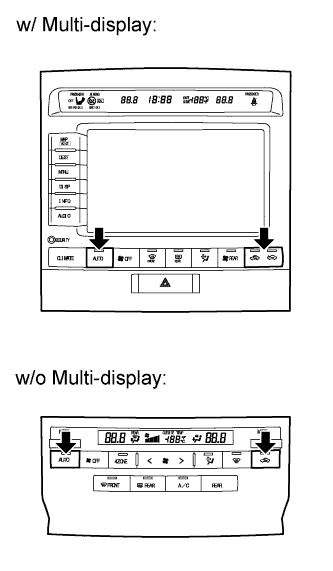
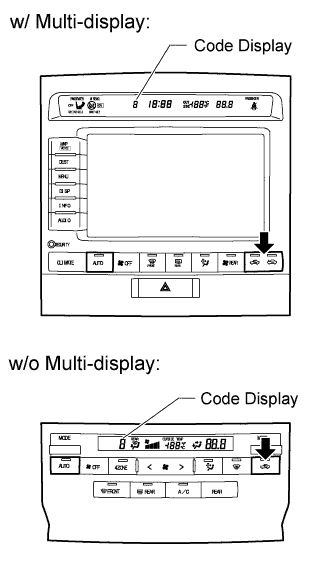

AIR CONDITIONING SYSTEM > ACTUATOR CHECK |
| ACTUATOR CHECK |
 |
Turn the engine switch on (IG) while pressing the A/C control AUTO switch and recirculation/fresh switch simultaneously.
 |
Press the recirculation/fresh switch.
By performing the actuator check, each damper, motor, and relay are automatically operated at 1 second intervals in a continuous cycle from step No. 1 to No. 10. During this operation, check the temperature and airflow indicated on the display as well as by hand.
| Step No. | Display Code | Conditions | |||||||
| Blower Level | Air Mix Damper Dr. Pa. | Air Mix Damper FrRr Dr. Pa. | Airflow Vent Dr. Pa. DEF Mode | Airflow Vent FrRr | Air Inlet | Cool Air Bypass Damper | Compressor | ||
| 1 | 0 | 0 | 0% | 0% | FACE | FACE | FRESH | -14% | OFF |
| 2 | 1 | 1 | |||||||
| 3 | 2 | 17 | RECIRCULATION/FRESH | ON | |||||
| 4 | 3 | 17 | RECIRCULATION | 113.0% | |||||
| 5 | 4 | 17 | 50% | 50% | B/L | B/L | |||
| 6 | 5 | 17 | |||||||
| 7 | 6 | 17 | FOOT | FOOT | FRESH | ||||
| 8 | 7 | 17 | 100% | 100% | FOOT | ||||
| 9 | 8 | 17 | F/D | ||||||
| 10 | 9 | 31 | DEF | 113.5% | |||||
| Step No. | Display Code | Conditions | |||
| Rear Blower Level | Rear Air Mix Damper Dr. Pa. | Rear Airflow Vent Dr. Pa. | Rear Magnetic Valve | ||
| 1 | 0 | 0 | 0% | FACE | OFF |
| 2 | 1 | 3 | |||
| 3 | 2 | 17 | ON | ||
| 4 | 3 | 17 | |||
| 5 | 4 | 17 | 50% | B/L | OFF |
| 6 | 5 | 17 | |||
| 7 | 6 | 17 | FOOT | ||
| 8 | 7 | 17 | 100% | ||
| 9 | 8 | 17 | |||
| 10 | 9 | 31 | |||